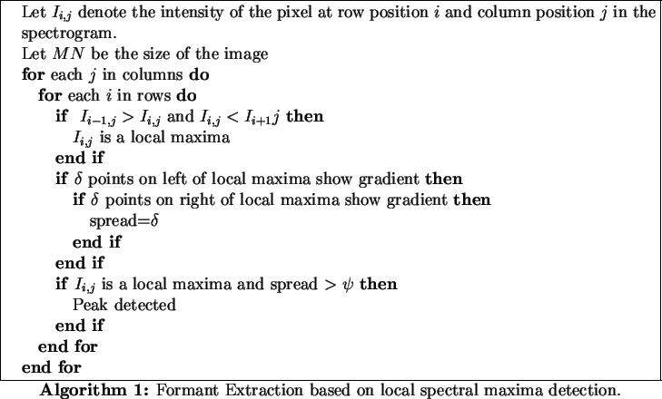
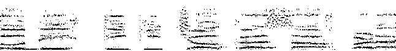

Depending on the content of the speech, the spectrogram shows certain contours of formants. The formants are high spectral energy regions and are represented as dark gray values in the spectrogram. From the spectrogram perspective, any frequencies, represented by lighter shades of gray, are essentially not formants and hence noise and need to be filtered out. More specifically the spectrogram shows an interlaced pattern of spectral peaks (dark regions) and valleys (light regions). This motivates us to extract the contours in a spectrogram to identify and isolate the spectral peaks and hence formants.
The formants are identified by a local spectral energy maxima, with a certain energy spread around this spectral peak. A local maxima detecting algorithm working on the spectrogram can detect local maxima and the variance of the energy spread. For our experimentation we have used the scheme shown in Algorithm 1 to identify formants.

The result of the formant extraction process (Algorithm 1),
applied to the spectrogram in Fig. 1(b) is shown in Fig. 2. As
seen in the Figure 2, all the spectral peaks have been identified
in the spectrogram and the low energy spectral frequencies have been filtered
out.
The simple formant extraction scheme described in Algorithm 1 picks all the high energy peaks in the spectrogram, in this process it picks up a few low spectral energy peaks. We need to segment the image to extract only the formants using a thresholding technique. It can be observed that the voiced parts of speech in general have a higher average energy content, compared to the unvoiced parts, for this reason the application of a global thresholding technique will removes important formant transition information in the unvoiced parts of the speech signal. For this reason we use an adaptive thresholding technique along the time axis of the spectrogram to filter out these spurious, low-energy peaks. This technique helps in retaining the spectral peaks that are more likely to represent the formants. This is because, as stated earlier, the formants are the resonant frequencies of the acoustic cavities and are characterized by high energy areas, which correspond to the taller peaks in the spectrum. These spectral peaks are are retained after adaptive thresholding.
We use a two-pass method to extract formants in the voiced and the unvoiced regions. In the first pass, a global threshold HRISHI, HOW DO YOU CHOOSE THE THRESHOLD is applied to the spectrogram. This threshold helps in retaining only formants in the voiced parts of the speech. As a consequence we are able to separate the voiced parts of the speech from the unvoiced parts of the speech. In the second pass, we operate only in the unvoiced segments of the speech, where a lower threshold HRISHI, HOW DO YOU CHOOSE THE THRESHOLD is set to extract formant transitions.
The result of two-pass adaptive thresholding technique is shown in Fig. 3. As a result the formant bands are emphasized and visual noise is filtered out. This image is then used for formant tracking.
|  |